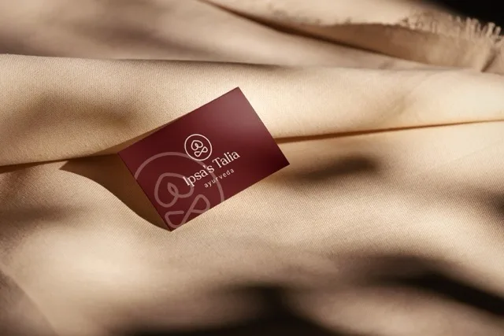
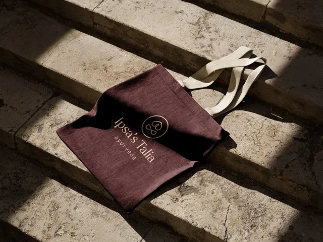
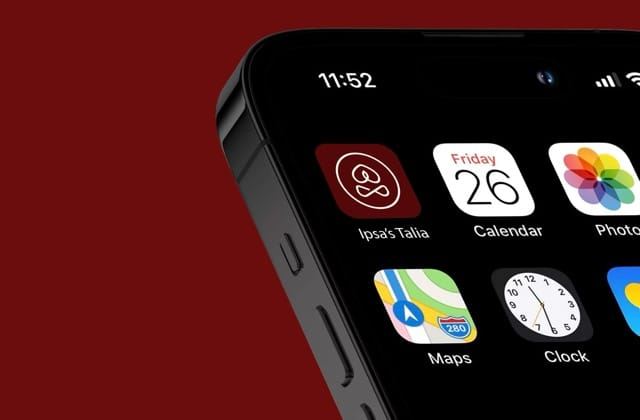

Ipsa's Talia, ancient roots, modern shelf.
I designed the logo and brand identity for Ipsa Talia, a premium hair oil brand for growth and dandruff care. The mark centers on a seated yoga figure with Namaskaram hands, giving the brand Ayurvedic roots without the usual herbs-and-pestle clichés.

The brief: tradition without the clichés
Ipsa Talia is a premium hair oil brand focused on hair growth and solving dandruff through a holistic, rejuvenating approach. The founder wanted a modern identity that still felt rooted in traditional wisdom, and specifically wanted to avoid the conventional Ayurvedic visual language of herbs, leaves, and pestles.
The logo had to reflect tradition without feeling clichéd and signal premium quality without being loud. It needed to communicate rejuvenation, balance, and inner strength while feeling timeless and refined.

The identity: a yoga pose, not a herb
I crafted the mark around a graceful seated figure in a meditative posture with Namaskaram hands, a symbol of harmony, calm, and inner balance that reads as wellness without any literal Ayurvedic icon. The palette pairs a brown-maroon mix for earthiness and warmth with cream for elegance, and a serif typeface carries the heritage-meets-sophistication tone.
The identity was tested across bottle labels, packaging, social media, printed materials, and shelf displays to confirm clarity and recall in the real market.


Delivery and scalability
The engagement ran through six phases, from discovery and strategy to symbol design, visual language, mockups, finalization, and long-term support. Final delivery packaged every asset with usage guidelines, including logo formats in AI, PNG, SVG, and PDF, plus brand colors, fonts, and a style guide.
The system was designed to be modular, so the identity flexes across future product extensions and campaigns and stays consistent for any partner who picks it up later.


